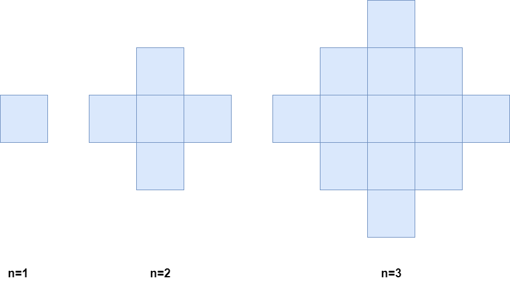

| Category | Difficulty | Likes | Dislikes |
|---|---|---|---|
| Algorithms | Medium | 841 | 95 |
facebook | amazon | bloomberg
There exists an infinitely large two-dimensional grid of uncolored unit cells. You are given a positive integer n, indicating that you must do the following routine for n minutes:
Below is a pictorial representation of the state of the grid after minutes 1, 2, and 3.

Return the number of colored cells at the end of n minutes.
Example 1:
Input: n = 1
Output: 1
Explanation: After 1 minute, there is only 1 blue cell, so we return 1.Example 2:
Input: n = 2
Output: 5
Explanation: After 2 minutes, there are 4 colored cells on the boundary and 1 in the center, so we return 5.
Constraints:
1 <= n <= 105